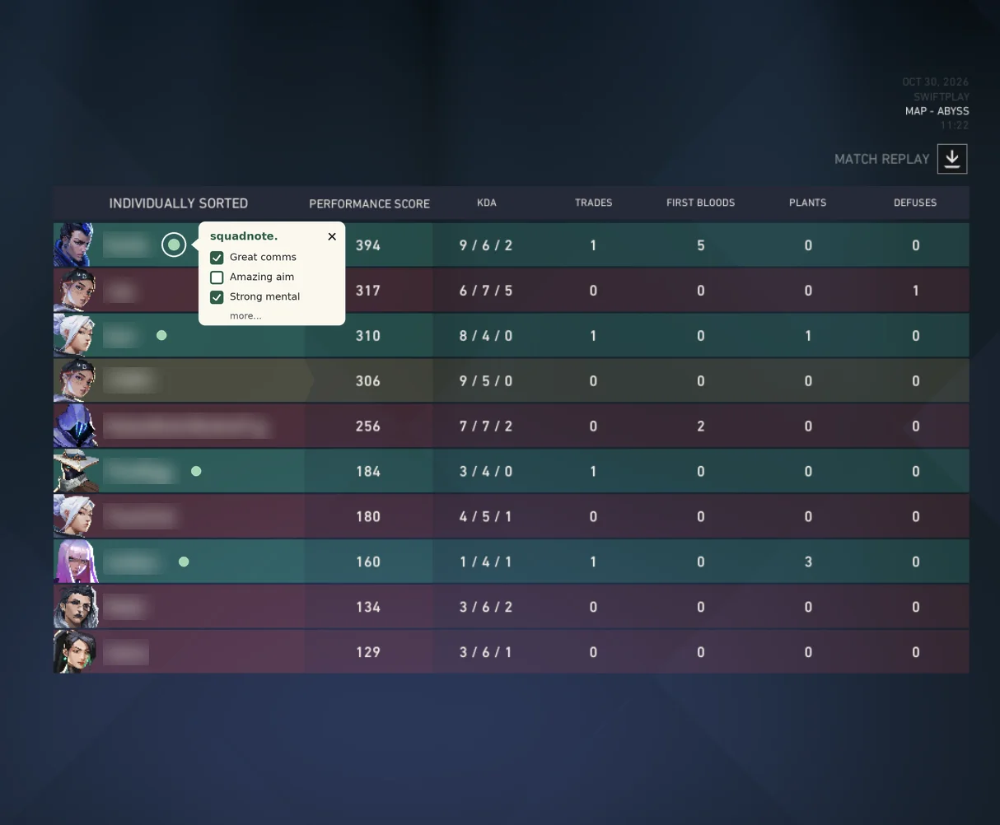

VALORANT / COMPETITIVE ONLY
Teammate feedback
in agent select.
Squadnote is a Windows app built on Overwolf that displays community feedback about your VALORANT teammates during Competitive agent select.
After a match, players leave tags about communication, teamwork and composure. Once enough different players report a pattern, Squadnote brings that feedback together in a short summary beneath the teammate.
View product demo See how it worksIn development for Windows. Release date to be announced.
PRODUCT PREVIEW / COMPETITIVE ONLY
Here’s how
Squadnote works.
Explore the agent-select preview below, then see how players leave feedback after a match. Open an orb to read a sample teammate summary.
During agent select
The orbs above your teammates open short summaries of community feedback. Try the orb the arrow points to.
Interactive illustration. Teammate names blurred. The screenshot shows Swiftplay; Squadnote is planned for Competitive only.
After the match
Choose tags for teammates you just played with. Communication, aim and composure are a few of the things players can give feedback on.

squadnote.This static mockup shows the planned tag picker beside a teammate’s name. Shared feedback uses preset tags, with one submission per teammate per match.
Summaries appear after the minimum review threshold is met across different players. Players can request a review of their summary or ask for their data to be removed.
Privacy and removal requestsHOW IT WORKS
After the match.
Before the next one.
The feedback you leave after a match becomes part of what future teammates see.
Link your account with Riot Sign On
Connect your Riot account through Riot Sign On. Squadnote will follow Riot’s guidance on player opt-in and data sharing.
Choose tags after a Competitive match
A post-game popup brings up your teammates. Choose preset tags about their communication, teamwork, composure and playstyle. Shared feedback uses tags only, with no free text. The planned system checks the match roster and accepts one submission per teammate per match.
Feedback builds over several matches
A summary appears after multiple different players report a recurring pattern and the minimum review threshold is met. Until then, the player’s summary reads “Not enough feedback.” We’ll publish the threshold before launch.
Read a short summary in agent select
During Competitive agent select, a compact overlay shows a short summary beneath each teammate. It brings together recurring feedback about their communication, teamwork, composure and playstyle, including strengths and habits others found frustrating. Phrases such as “players often praise…” identify the feedback as a community perspective.
THE FEEDBACK
How they play
with other people.
Clear calls. Helping the team. Keeping calm through a difficult half.
How it feels to play together
Solo queue means committing to a match with people whose communication and habits you may know nothing about. Squadnote gives you a little of that context: whether previous teammates appreciated their calls, their willingness to work together or how they handled a difficult half.
Community summaries
A teammate can communicate well and still get frustrated when the team falls behind. Summaries can reflect both sides of that experience. Multiple reports contribute to the wording, while individual submissions and reviewer identities stay private.
Your own notes
Private notes are also planned. Write a reminder about someone you played with and read it when you meet again. These stay with the author and are kept separate from shared tags.
IN DEVELOPMENT
How feedback
becomes a pattern.
The rules we’re working toward before launch.
Feedback from real teammates
Shared-match verification and a limit of one submission per teammate per match establish where each contribution comes from. Summaries need feedback from several different players.
Reviewing unusual activity
Planned checks cover premade-party feedback, new reviewer accounts and sudden bursts of submissions about one player. These safeguards are still being developed and tested.
Player control
Players can request a review of their summary, removal or data deletion through the request process below. Visibility and data-sharing rules will follow Riot’s guidance before launch.
YOUR DATA
Privacy & removal
You should have a way to leave, and a way to raise a concern.
This website
This is a static information page. It has no sign-in form, analytics scripts, tracking cookies or player-data collection. GitHub Pages hosts it and may process connection information under GitHub’s privacy statement.
Deletion and removal requests
You can request deletion of your Squadnote account and associated data, or ask for a feedback summary to be removed or reviewed. During development, contact the maintainer through the project’s request channel below.
Start with a general request only. Do not post your Riot ID, email, account identifiers or other personal information publicly. The maintainer will arrange any necessary verification privately before handling account-specific data.
Contact the maintainerThe app’s full privacy policy, retention periods and account controls will be published before player data is collected. This page does not connect to Riot or the overlay.